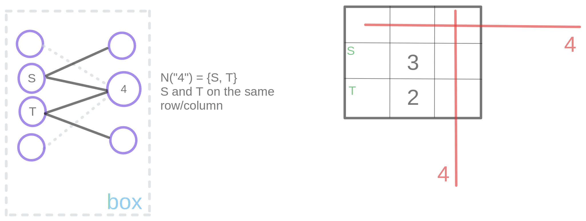

Sudoku
In Sudoku puzzle, you are given a partially filled 9x9 grid, and the objective is to complete that grid such that each column, each row, and each box (3x3 subgrids that compose the whole grid) contain all of the digits from 1 to 9.
There are many Sudoku solving techniques, see sudokuwiki.org, sudoku.com, masteringsudoku.com, Here we will express some of the simple techniques (e.g. Naked Candidates, Hidden Candidates) using graph theory terminology.
For each unit (rows, columns, boxes) we can construct a bipartite graph having edges between squares and digits. An entry which is an assignment of a digit to a square can be seen as a matching in this graph (why?). Since all digits and squares should be matched, we could say that we are looking for a perfect matching.
Last Remaining Cell in a Unit
Last Possible Digit for a Square
Naked Candidates
Hidden Candidates
Pointing Pairs
